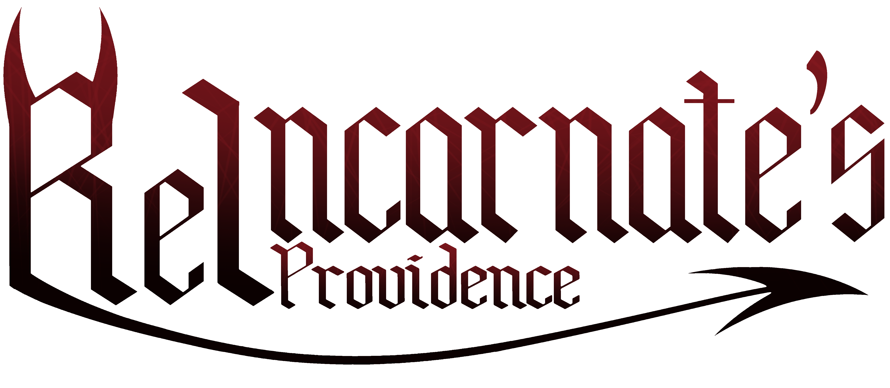

It's the year XXXX, July 2nd. A young boy's 11th birthday is just around the corner and he couldn't be more
excited. After all, he had the whole day to himself and his mother... but alas, after an "unfortunate
accident," the young boy didn't get to see his birthday.
Slipping into the inky black darkness, he hears a voice speaking to him in a gentle whisper.
"An unfortunate fate has befallen you, but do not fret, my child. Your story is yet to end, for it has only
just begun. You'll shed your former identity and start anew."
"I think I'll call you... Kieran. Yes... Kieran."
"Kieran" awakens to a fantastical and strange world filled with unfamiliar creatures. The words of the
unknown entity are all he has as he begins his journey, collecting allies and making enemies along the way.